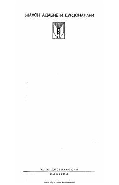

FDInson ruhiyatining chuqur fojiasini ochib beruvchi mumtoz asar.
Mashhur yozuvchi F. M. Dostoyevskiy qalamiga mansub ushbu asar inson ruhiyatining murakkab qirralarini ochib beradi. Qissada bosh qahramon va uning taqdiri orqali jamiyatdagi ziddiyatlar, insoniy munosabatlar va fojiali kechinmalar chuqur badiiy tahlil qilingan.